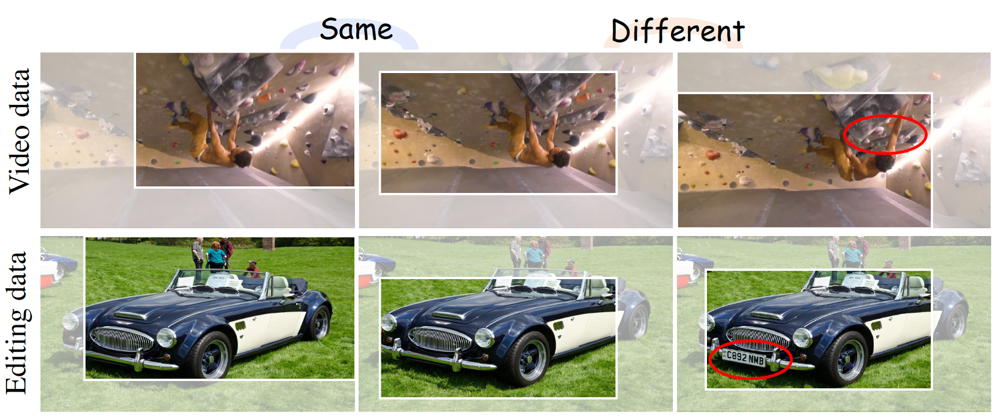
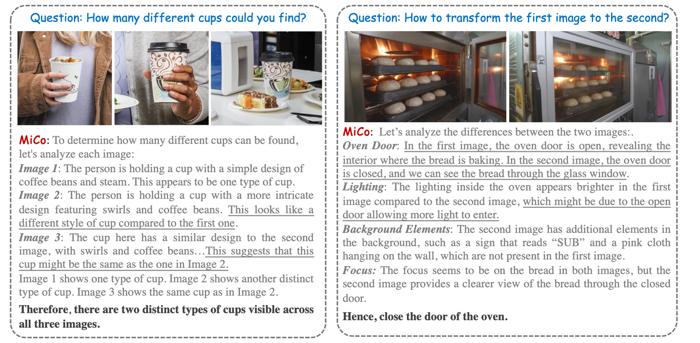
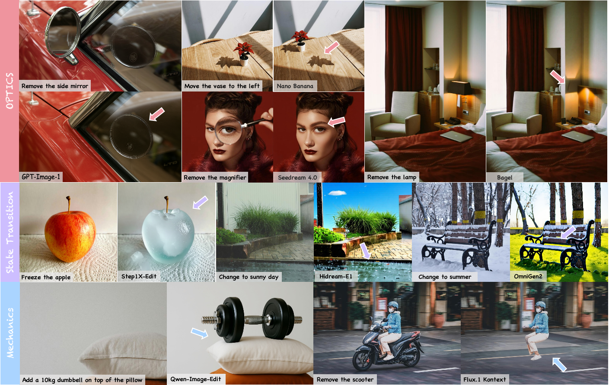

|
I am a staff research scientist at ByteDance Seed (San Jose, CA), working on multi-modal generation. I received my Ph.D. from the University of Hong Kong, supervised by Prof. Hengshuang Zhao. Previously, I received my Master's and Bachelor's degrees from Zhejiang University, along with a dual master's degree from Ecole Centrale Mediterranee. During my studies, I interned and collaborated with Google DeepMind (Nano-Banana Team), Adobe Research (Dr. Zhe Lin's Team), Meta, Alibaba Tongyi Lab (Wan Team), Megvii (Detection Team), SenseTime, Hikvision, Ufoto, AISegment, LIS (France), and others. Thanks! I am always looking for strong research interns/collaborators to push the frontier across multimodal generation, LLMs, VLMs, RL, embodied AI, and beyond — reach me at xichen.csai AT gmail for internships or collaborations.
|

|

|
|
|
|
  |
NeurIPS, 2025 pdf / media(AK) / code(todo) MiCo is a self-supervised reinforcement learning framework for multi-image visual reasoning. It leverages supervision by comparing an image, its augmented view, and a similar image to encourage chain-of-thought (CoT) reasoning through a method we call "Augmented-GRPO." |

|
CVPR, 2025 (Highlight) pdf/ page/ code (data construction) 
Foundational multi-modal generative model cooperated with Adobe. UniReal is a universal framework for multiple image generation and editing tasks. We leverage a video model to handld image tasks by treating different numbers of input/output images as frames. We also seek universal supervisions from video data, thus generating realistic results that understand the world dynamics. |

|
NeurIPS, 2024 pdf/ page/ code  /
media (AK)/
media (Gradio) /
media (AK)/
media (Gradio)
MimicBrush conducts imitative editing by discovering the semantic correspondence between the source and reference image. It supports interesting and practical applications for local region composition and texture transfer. |

|
ECCV, 2024 pdf/ page/ code  /
media (AK) /
media (AK)
We present LivePhoto, a real image animation method with text control. Different from previous works, LivePhoto truely listens to the text instructions and well preserves the object-ID. |

|
CVPR, 2024 / TPAMI, 2025 (Extension) pdf/ page/ code  /
media[AK]/
[量子位]/
[机器之心] /
media[AK]/
[量子位]/
[机器之心]
Selected as one of the most influential papers of CVPR 2024. GitHub Trending No.1. This work presents AnyDoor, a diffusion-based image generator with the power to teleport target objects to new scenes at user-specified locations in a harmonious way. |

|
ICCV, 2023 pdf/ page We present a omnipotent and efficient framework for open-vocabulary panoptic segmentation, which shows great performance for both closed- and open-vocabulary settings with limited training data. |

|
CVPR, 2022 / TPAMI, 2026 (Extension) pdf / code 
FocalClick is a simple and effective solution for interactive segmentation. It largely reduces the computation for various models by focusing on target local regions. |

|
ICCV, 2021 pdf / code
We view interactive segmentation as a diffusion procedure and design feature- and pixel-level diffuion modules for more consistent predictions. |

|
CVPR, 2020 pdf / code 
We propose a novel pipeline called State-Aware Tracker (SAT), which can produce accurate segmentation results with real-time speed. |
|
|
|
 |
ICLR, 2026 pdf / page / code 
We evaluates physical realism across eight sub-dimension for most of the common editing operations (add, remove, attribute change, etc.) We find that even SoTA models could not deal with physics well. |

|
NeurIPS(Oral), 2025 pdf / page We develop an ego-centric world model. User could use their own actions to explore and interact with the virtual world. |

|
NeurIPS, 2025 pdf / page / code 
We conduct a systematic exploration of customized video generation, including a data construction pipeline, a unified model, and a comprehensive benchmark. |
|
Reviewer / Program Committee Member
Organizer / Program Chair |
|
|